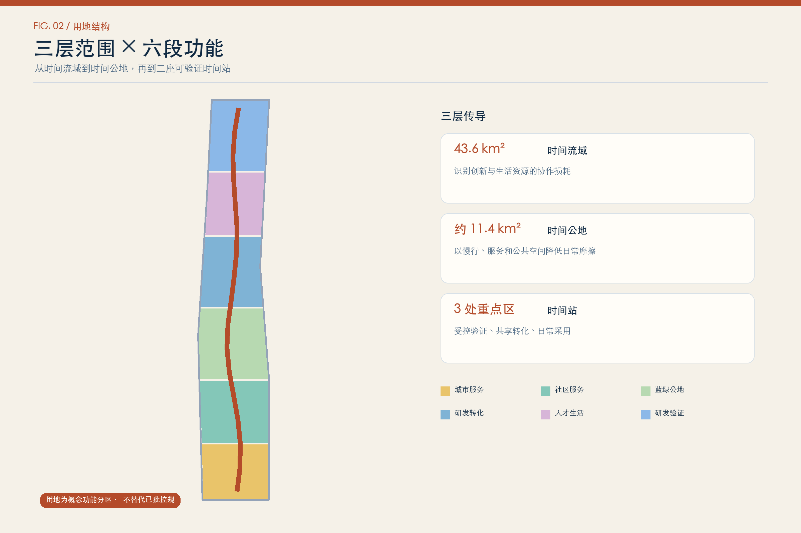
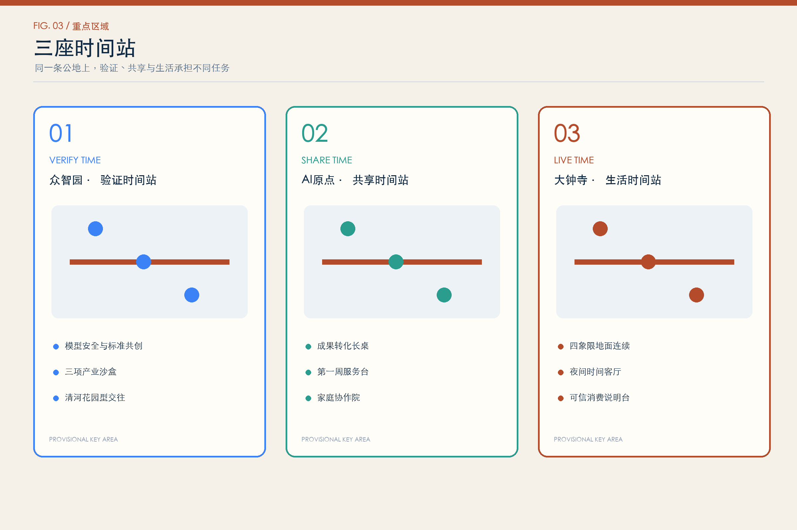
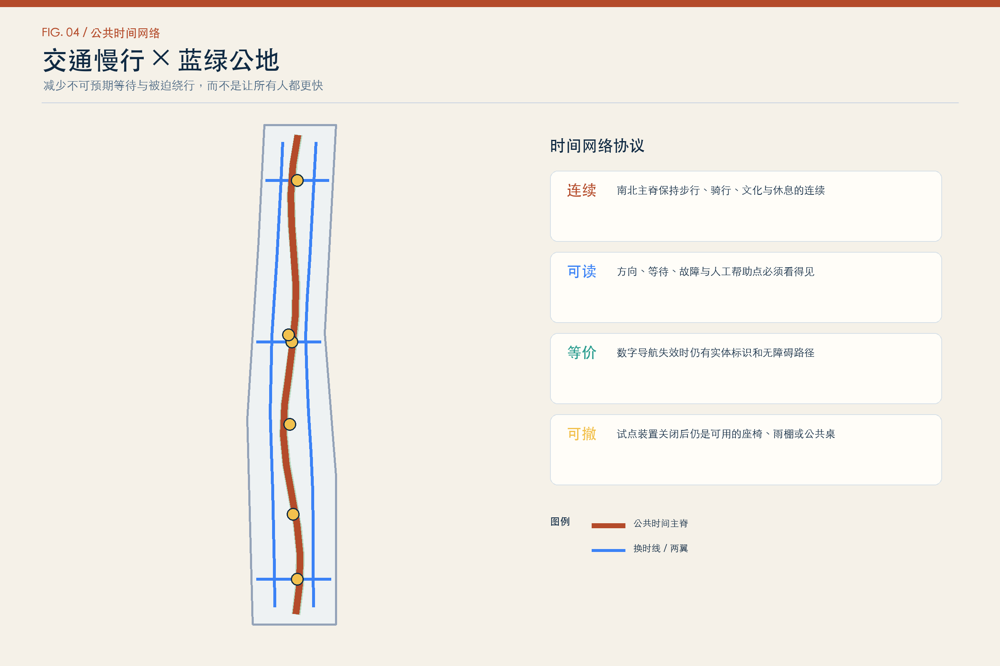
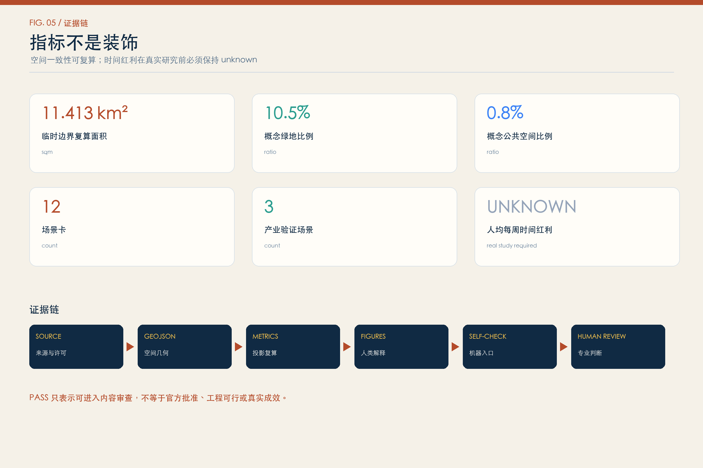

VERIFY TIME
众智园 · 验证时间站模型安全、低速机器人、端侧算力三项受控验证；每项试验先写责任和停止条件。
把时间还给人，让创新在生活里扎根。以公共时间红利而非技术展示，判断 AI 是否值得进入城市。
总体边界与三处重点区只用于生成、讨论和自检。所有空间内容均为概念建议，待官方资料后整链重算。

AI 有没有减少通勤、照护、办事、学习和协作中的无效等待？节省的时间是否成为公众可以共享、纠错和收回的红利？

统筹研究范围 → 总体设计范围 → 三处重点区域
模型安全、低速机器人、端侧算力三项受控验证；每项试验先写责任和停止条件。
开源长桌、第一周服务台、家庭协作院，把成果转化与完整生活放在同一张步行网。
地面连续、夜间支持、可信消费与人工帮助，让技术进入日常但不接管责任。

每张卡共享八项协议：对象、时间损耗、空间、AI作用、人工复核、无AI路径、退出条件、验证指标。
产业验证 · 人工复核 · 无AI路径 · 可暂停
产业验证 · 人工复核 · 无AI路径 · 可暂停
产业验证 · 人工复核 · 无AI路径 · 可暂停
人才落地 · 人工复核 · 无AI路径 · 可暂停
成果转化 · 人工复核 · 无AI路径 · 可暂停
完整生活 · 人工复核 · 无AI路径 · 可暂停
交通慢行 · 人工复核 · 无AI路径 · 可暂停
公共服务 · 人工复核 · 无AI路径 · 可暂停
夜间支持 · 人工复核 · 无AI路径 · 可暂停
智能消费 · 人工复核 · 无AI路径 · 可暂停
文化叙事 · 人工复核 · 无AI路径 · 可暂停
公众治理 · 人工复核 · 无AI路径 · 可暂停

A1 时间基线、A2 主脊试标、A3 验证庭、A4 第一周台、A5 家庭协作院、A6 夜间客厅、A7 公共时间账本、A8 年度时间节、A9 官方数据重算、A10 专业深化。所有项目均有先决条件和退出路径，不构成建设时序或资金承诺。
产业、大学、社区与 living lab 协同。
创业服务与居住支持相邻。
既有建筑更新与长期社区运营。
实验室、创业、研究与采用服务共址。
生产、日常、公共设施与绿色空间混合。
包容性增长、Commons、培训和多方治理。

LOCAL PASS TARGET
机器检查只证明包可读、可解析、可复算，不代表官方批准、工程可行或真实效果。
公告 1.3、1.4、1.5 的 17 项要求与 agent.1-agent.6 全部映射到正文、GeoJSON、metrics、A3/A0、离线 HTML 和自检证据；详细映射见 compliance_matrix.json。
官方边界、控规与四线、现状建筑及权属、道路断面与市政、文保和公共服务底数均待补。时间红利需要真实时间日记、用户研究和受控试点；在此之前保持 unknown。